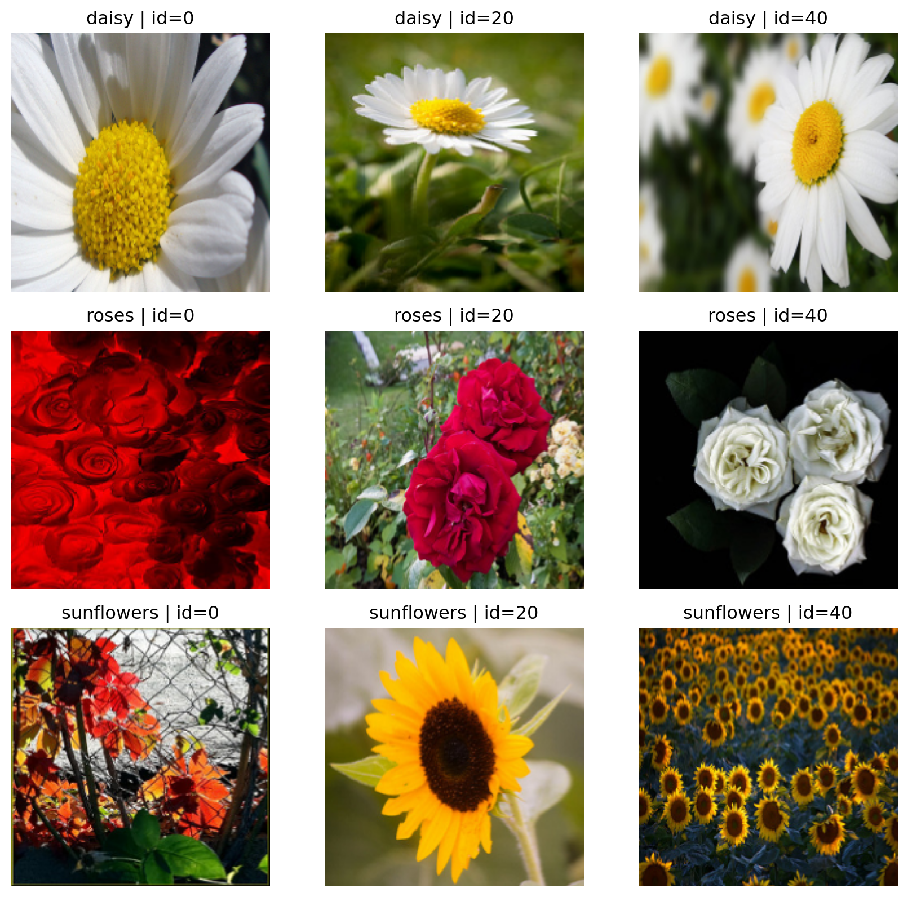
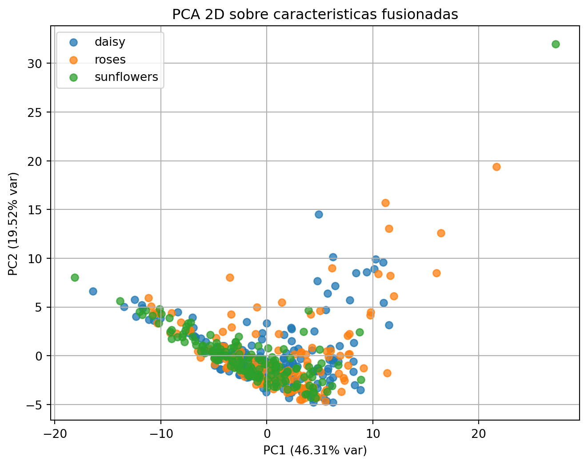
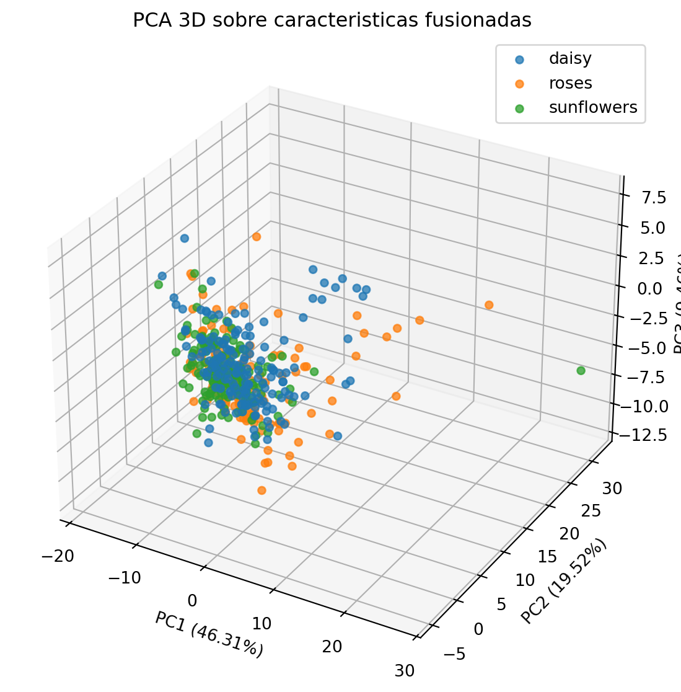

from pathlib import Path
import urllib.request
import tarfile
import random
import cv2
import numpy as np
import pandas as pd
import matplotlib.pyplot as plt
from scipy.stats import skew
from skimage.feature import graycomatrix, graycoprops
from sklearn.model_selection import train_test_split
from sklearn.pipeline import Pipeline
from sklearn.preprocessing import StandardScaler
from sklearn.decomposition import PCA
from sklearn.linear_model import LogisticRegression
from sklearn.metrics import accuracy_scoreEjemplo Real Clase 2: Feature Fusion + PCA en un Dataset Real
Objetivo del ejemplo
Construir un flujo completo y real:
- Descargar un dataset publico de imagenes.
- Extraer tres familias de descriptores: GLCM, Hu y color.
- Fusionar caracteristicas en un unico vector por imagen.
- Escalar, aplicar PCA y visualizar separabilidad.
- Comparar contra descriptores individuales.
0. Librerias
1. Descargar dataset real (Flowers)
DATA_DIR = Path("datos_ejemplo")
FLOWERS_DIR = DATA_DIR / "flower_photos"
FLOWERS_URL = "https://storage.googleapis.com/download.tensorflow.org/example_images/flower_photos.tgz"
def ensure_flowers_dataset(url=FLOWERS_URL, out_dir=DATA_DIR):
out_dir.mkdir(parents=True, exist_ok=True)
archive_path = out_dir / "flower_photos.tgz"
if not FLOWERS_DIR.exists():
if not archive_path.exists():
urllib.request.urlretrieve(url, archive_path)
with tarfile.open(archive_path, "r:gz") as tar:
tar.extractall(path=out_dir)
ensure_flowers_dataset()def load_flower_paths(classes=("daisy", "sunflowers", "roses"), max_per_class=160, seed=7):
rng = random.Random(seed)
paths = []
labels = []
for cls in classes:
cls_dir = FLOWERS_DIR / cls
imgs = [p for p in sorted(cls_dir.glob("*")) if p.suffix.lower() in {".jpg", ".jpeg", ".png"}]
rng.shuffle(imgs)
imgs = imgs[:max_per_class]
paths.extend(imgs)
labels.extend([cls] * len(imgs))
return paths, np.array(labels)
paths_img, y = load_flower_paths()
pd.Series(y).value_counts()daisy 160
sunflowers 160
roses 160
Name: count, dtype: int64Vista rapida de imagenes por clase
# IDs fijos por clase (posiciones dentro de la lista ordenada de archivos)
FLOWER_SAMPLE_POS = {
"daisy": [0, 20, 40],
"roses": [0, 20, 40],
"sunflowers": [0, 20, 40],
}
def show_flower_samples(paths, labels, sample_pos=FLOWER_SAMPLE_POS):
classes = sorted(np.unique(labels))
per_class = max(len(v) for v in sample_pos.values())
fig, axes = plt.subplots(len(classes), per_class, figsize=(3.0 * per_class, 2.8 * len(classes)))
if len(classes) == 1:
axes = np.array([axes])
for i, cls in enumerate(classes):
cls_paths = sorted([p for p, yv in zip(paths, labels) if yv == cls], key=lambda p: p.name)
picks = []
for pos in sample_pos.get(cls, []):
if 0 <= pos < len(cls_paths):
picks.append(cls_paths[pos])
for j in range(per_class):
ax = axes[i, j]
if j < len(picks):
img_bgr = cv2.imread(str(picks[j]))
img = cv2.cvtColor(img_bgr, cv2.COLOR_BGR2RGB)
img = cv2.resize(img, (200, 200), interpolation=cv2.INTER_AREA)
ax.imshow(img)
ax.set_title(f"{cls} | id={sample_pos.get(cls, [])[j]}")
ax.axis("off")
plt.tight_layout()
plt.show()
show_flower_samples(paths_img, y)
2. Extractores
def read_rgb(path, size=(160, 160)):
img_bgr = cv2.imread(str(path))
if img_bgr is None:
raise ValueError(f"No se pudo leer: {path}")
img_rgb = cv2.cvtColor(img_bgr, cv2.COLOR_BGR2RGB)
if size is not None:
img_rgb = cv2.resize(img_rgb, size, interpolation=cv2.INTER_AREA)
return img_rgb
def extract_color_moments(image_rgb):
feats = []
for idx in range(3):
channel = image_rgb[:, :, idx].astype(np.float64).ravel()
feats.extend([
channel.mean(),
channel.std(ddof=0),
skew(channel, bias=False),
])
return np.nan_to_num(np.array(feats, dtype=float), nan=0.0, posinf=0.0, neginf=0.0)
def extract_glcm(image_rgb, levels=32):
gray = cv2.cvtColor(image_rgb, cv2.COLOR_RGB2GRAY)
q = (gray / 256 * levels).astype(np.uint8)
q = np.clip(q, 0, levels - 1)
glcm = graycomatrix(
q,
distances=[1, 3],
angles=[0, np.pi / 4, np.pi / 2, 3 * np.pi / 4],
levels=levels,
symmetric=True,
normed=True,
)
props = ["contrast", "dissimilarity", "homogeneity", "ASM", "energy", "correlation"]
feats = []
for prop in props:
vals = graycoprops(glcm, prop)
feats.extend(vals.ravel().tolist())
return np.array(feats, dtype=float)
def extract_hu(image_rgb):
gray = cv2.cvtColor(image_rgb, cv2.COLOR_RGB2GRAY)
blur = cv2.GaussianBlur(gray, (5, 5), 0)
_, mask = cv2.threshold(blur, 0, 255, cv2.THRESH_BINARY + cv2.THRESH_OTSU)
moments = cv2.moments(mask)
hu = cv2.HuMoments(moments).flatten()
hu_log = -np.sign(hu) * np.log10(np.abs(hu) + 1e-12)
return np.nan_to_num(hu_log, nan=0.0, posinf=0.0, neginf=0.0)
def extract_fused(image_rgb):
g = extract_glcm(image_rgb)
h = extract_hu(image_rgb)
c = extract_color_moments(image_rgb)
return np.concatenate([g, h, c])3. Matrices de caracteristicas
def build_matrix(paths, extractor):
rows = []
for p in paths:
img = read_rgb(p)
rows.append(extractor(img))
return np.vstack(rows)
X_glcm = build_matrix(paths_img, extract_glcm)
X_hu = build_matrix(paths_img, extract_hu)
X_color = build_matrix(paths_img, extract_color_moments)
X_fused = build_matrix(paths_img, extract_fused)
X_glcm.shape, X_hu.shape, X_color.shape, X_fused.shape((480, 48), (480, 7), (480, 9), (480, 64))4. Comparacion de rendimiento base
def evaluate_accuracy(X, y, test_size=0.25, random_state=42):
X_train, X_test, y_train, y_test = train_test_split(
X, y, test_size=test_size, stratify=y, random_state=random_state
)
pipe = Pipeline([
("scaler", StandardScaler()),
("clf", LogisticRegression(max_iter=3000)),
])
pipe.fit(X_train, y_train)
pred = pipe.predict(X_test)
return accuracy_score(y_test, pred)
acc_glcm = evaluate_accuracy(X_glcm, y)
acc_hu = evaluate_accuracy(X_hu, y)
acc_color = evaluate_accuracy(X_color, y)
acc_fused = evaluate_accuracy(X_fused, y)
pd.DataFrame(
{
"descriptor": ["GLCM", "Hu", "Color", "Fusion (GLCM+Hu+Color)"],
"accuracy": [acc_glcm, acc_hu, acc_color, acc_fused],
}
)| descriptor | accuracy | |
|---|---|---|
| 0 | GLCM | 0.566667 |
| 1 | Hu | 0.325000 |
| 2 | Color | 0.641667 |
| 3 | Fusion (GLCM+Hu+Color) | 0.675000 |
5. PCA sobre espacio fusionado
scaler = StandardScaler()
X_fused_scaled = scaler.fit_transform(X_fused)
pca2 = PCA(n_components=2, random_state=42)
Z2 = pca2.fit_transform(X_fused_scaled)
pca3 = PCA(n_components=3, random_state=42)
Z3 = pca3.fit_transform(X_fused_scaled)
pca2.explained_variance_ratio_, pca3.explained_variance_ratio_(array([0.46310173, 0.19518652]), array([0.46310173, 0.19518652, 0.09458481]))Visualizacion 2D
plt.figure(figsize=(8, 6))
for cls in np.unique(y):
idx = y == cls
plt.scatter(Z2[idx, 0], Z2[idx, 1], label=cls, alpha=0.75)
plt.xlabel(f"PC1 ({pca2.explained_variance_ratio_[0] * 100:.2f}% var)")
plt.ylabel(f"PC2 ({pca2.explained_variance_ratio_[1] * 100:.2f}% var)")
plt.title("PCA 2D sobre caracteristicas fusionadas")
plt.legend()
plt.grid(True)
plt.show()
Visualizacion 3D
fig = plt.figure(figsize=(9, 7))
ax = fig.add_subplot(111, projection="3d")
for cls in np.unique(y):
idx = y == cls
ax.scatter(Z3[idx, 0], Z3[idx, 1], Z3[idx, 2], label=cls, alpha=0.75)
ax.set_xlabel(f"PC1 ({pca3.explained_variance_ratio_[0] * 100:.2f}%)")
ax.set_ylabel(f"PC2 ({pca3.explained_variance_ratio_[1] * 100:.2f}%)")
ax.set_zlabel(f"PC3 ({pca3.explained_variance_ratio_[2] * 100:.2f}%)")
ax.set_title("PCA 3D sobre caracteristicas fusionadas")
ax.legend()
plt.show()
6. Lectura didactica para presentar
- Si Fusion supera a bloques individuales, hay evidencia de complementariedad entre textura, forma y color.
- Si PCA muestra grupos relativamente separados, hay estructura discriminativa en el espacio fusionado.
- Si hay solapamiento fuerte, puedes discutir mejoras:
- mayor limpieza de segmentacion para Hu,
- parametros de GLCM por region,
- otros espacios de color (HSV o Lab),
- clasificadores no lineales.
Cierre
Este ejemplo aterriza la narrativa de la Clase 2 con un flujo real completo:
- dataset publico,
- extraccion por bloques,
- fusion,
- PCA,
- comparacion cuantitativa.
Es ideal para una demostracion en vivo y para tarea de reproduccion por parte del estudiante.